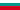

Музей по Спелеология и Български Карст
Museum of Speleology and Bulgarian Karst - Museum of the Rhodope Karst
Useful Information
| Location: |
ul Shina Andreeva 9a, Chepelare.
70 km south of Plovdiv. (41.725208, 24.687900) |
| Open: |
All year Tue-Sun 9-12, 13:30-17:30. [2021] |
| Fee: |
Adults BGN 3, Children (6-18) BGN 1.50. [2021] |
| Classification: |
 Cave and Karst Museum Cave and Karst Museum
|
| Light: |
 Incandescent Electric Light System Incandescent Electric Light System
|
| Dimension: | |
| Guided tours: |
self guided
guided tours in  
 V=11,000/a [2010]
V=11,000/a [2010]
|
| Photography: | |
| Accessibility: | |
| Bibliography: |
Dora Angelova (2003):
Karst types in Bulgaria,
Acta carsologica, 32/1 (2003).
pdf
|
| Address: | Museum of Speleology and Bulgarian Karst, 9 A Shina Andreeva St., Chepelare, Tel: +359-3051-2041, Tel: +359-3051-3041. Director: Iovka Raikova |
| As far as we know this information was accurate when it was published (see years in brackets), but may have changed since then. Please check rates and details directly with the companies in question if you need more recent info. |
|
History
| 1950 | founding of speleo club at Chepelare. |
| 1968 | exhibition of cave materials, alpine technique, pottery, bones and caves. |
| 1970 | beginning of scientific exploration of theRodopes. |
| 1980 | museum founded. |
| 1983 | opened to the public. |
Description
The Музей по спелеология и български карст (Museum of Speleology and Bulgarian Karst) is located at Chepelare. It was started by the local speleology club. The club was founded as a group of students in 1950 by the young teacher Dimitar Raichiv and other cave enthusiasts, and explored the caves in the Rodope mountains to the south. In 1963 a Cave Club was established. The first time the collections of the club were opened to the public was 1968.
The scientific exploration of the Rodopes started in 1970. The major research was done by the National Natural Museum, the Institute of Zoology of the Bulgarian Academy of Science, and the University of "St. Kliment Ohridski" in Sofia. The museum in its current form was founded in 1980 by senior research associate Ilko Basamakov. Many researchers and professors helped to create it. The Museum of Speleology and Bulgarian Karst was opened to the public in 1983.
The museum has a vast collection of 9,400 speleological and 7,100 scientific exhibits. The library has 730 volumes and there is a laboratory and a conference hall with 60 seats. The public exhibition has a size of 870m² and is grouped into five main topics.
The Geology section concentrates on general mineralogy, cave mineralogy, petrography. The collection includes minerals and rocks from the Rhodopes. The variety is astonishing for a karst area, which normally consists of limestone. The Rhodopes have a complex geology and are formed mainly of metamorphites, which includes the karstified marble. As a result the collection includes cave minerals (cave gypsum, fluorite), metaphormic rocks (gneiss, schist), a variety of minerals (quartz, aquamarine, tourmaline, garnet, amethyst, opal, calcite), magma rocks (granite, daikova rock) and even some younger sedimentary rocks (paleogene marble breccia, paleogene marls with fossil flora).
The Geomorphology Section concentrates on the karst, both subaerial and subterranean karst forms. The different karstified rock formations in the area are explained, like the marble, Middle Triasic gypsum, Jurassic limestone, and much younger travertine and calcarous breccia. The collection of speleothems includes stalactites, stalagmites, cave pearls, corals, and various calcite crystals. There is even a section on the mine "Persenk".
The Biospeleology Section exhibits 40 troglobiont and troglophile species. It also shows the 10 species of Chiroptera found in the local caves. The most common bats are Myotis blythi, Myotis daubeutoni,Myotis mystacinus, and Plecotus austriacus. The exhibited items were collected from the caves Temnata dupka, Dushinka, Yagodinska, Ledenika, Kalugerova dupka, and Gradeshtnitsa.
The Palaeontology Section shows the remains of Tertiary animal, mostly bones and teeth found in the caves. There are many remains of cave bear (Ursus spelaeus), the jaw of a cave leopard, the upper jaw and tusks of a rhinoceros, bones of a wild horse, and the skull of a buffalo. Highlight is a reassembled skeleton of a cave bear.
The Archaeology Section shows many human remains from the Palaeolithic and Mesolithic. The collection includes tools made of stone, bones and flint, decorated pottery, various molds, and needles. The research concentrated on Yagodinska cave, the village of Trigrad, and the village of Zabardo.
The city of Chepelare is a famous tourist destination and a ski resort. The museum is unique and thus well visited by domestic and international guests. As a result the museum offers guided tours in German, English, Russian and Bulgarian. With its shop it offers literature and information on the caves and karst of the area. It is also a good starting point for cave trekking tours and is able to provide trained cave guides. It is located on the first floor of an alpine style hotel building, which is named Пещерняк (Caveman).
- See also
 Search Google for "Museum of Speleology and Bulgarian Karst"
Search Google for "Museum of Speleology and Bulgarian Karst" Google Earth Placemark
Google Earth Placemark Visit in Museum of Speleology and Bulgarian Karst (visited: 19-JUN-2011)
Visit in Museum of Speleology and Bulgarian Karst (visited: 19-JUN-2011)- Museum of Speleology and Bulgarian Karst (visited: 18-AUG-2021)
- Museum of the Rhodope Karst – Chepelare (visited: 18-AUG-2021)
- Bulgarian Karst Speleology Museum (visited: 18-AUG-2021)
- MUSEUM OF SPELEOLOGY AND BULGARIAN KARST - CHEPELARE (visited: 18-AUG-2021)
 Index
Index Topics
Topics Hierarchical
Hierarchical Countries
Countries Maps
Maps Search
Search